<link rel="shortcut icon" href="league-icon.ico"/>
<link rel="stylesheet" type="text/css" href="StyleSheet.css">

<title>Zed Guide</title>

<nav>
  <a href="#header">title</a>
  <a href="#lore">lore</a>
  <a href="#skins">skins</a>
  <a href="#build">build</a>
  <a href="#masteries">masteries</a>
  <a href="#runes">runes</a>
  <a href="#lane">lane</a>
</nav>

<header>
  <div id="header">
    <h1><span><p>Zed Guide</p></span></h1>
  </div>
</header>
  <!--Lore-->
<section id="lore">
  <p class="Lore-1">zed is an attack damage ability based assassin, usually played in the mid lane who is very scary to face if fed in lane
lets take a look inside of who zed is and some tips and tricks and fun facts about the master of shadows.</p>
  <p class="Lore-2">Zed is the first ninja in 200 years to unlock the ancient, forbidden ways. He defied his clan and master, casting off the balance and discipline that had shackled him all his life. Zed now offers power to those who embrace knowledge of the shadows, and slays those who cling to ignorance.<br>
<br>
An orphan, Zed was taken in and trained by a great ninja master. Only one other student appeared to be Zed's equal - the master's son, Shen. It seemed Zed could never win the favor of the master, as every match between the rivals ended in a draw. Frustrated and jealous, he sought an advantage. The young ninja ventured into a sealed part of the clan's temple, where he found an ornate, foreboding box. Sensing the dark knowledge within, Zed knew he should not open it, but he peered inside nonetheless. In an instant, shadows touched his mind, revealing techniques that had long been hidden. Now armed with a secret edge, he challenged Shen, and this time he defeated the master's son. He expected praise and recognition in his moment of victory, but somehow the master knew Zed had used forbidden ways, and banished him.<br>
<br>
Humiliated, the young ninja wandered for years. His bitterness turned to ambition, and he began to train others in the style of the shadows. As his power grew, so did his circle of followers, but he knew that without the box, his technique would never be perfect. One day, Zed looked at his followers and saw that his students were now an army. He led them back to the temple to claim his prize. At the gates, he was surprised to find the old master waiting, receiving Zed and his disciples as if they were welcome guests. The old man laid his sword at Zed's feet, declaring that he had failed Zed as his master. By banishing his former student, the master had doomed Zed to the shadows, instead of leading him to the balanced path. The old man implored Zed to enter the temple, destroy the box, and lead his followers to balance. The dark ninja followed the master inside. Moments later, the assembled ninjas heard Zed cry out in pain. Mysteriously, he emerged unscathed, and threw the severed head of the master at Shen's feet. Screaming in rage, Zed commanded his followers to slaughter the master's students and seize the box.<br>
<br>
That day, the old ninja order fell. Though many students died, some escaped thanks to Shen's heroic efforts. Now the temple is a dark training ground for the Order of the Shadow. Zed rules as the Order's master, and his edict is simple: perfect one's technique, and kill all ninjas who refuse to embrace the shadows.<br>
<br>
''Balance is a lie - we are the true ninjas.''<br>
<br>
-- Zed</p>
</section>

<section id="skins">
<div class="image-content">
  </img>
  </img>
  </img>
  </img>
  </img>
  <p class="skin-text">
zed has 5 skins.<br>
TOP LEFT SHOCKBLADE ZED<br>
TOP MIDDLE PROJECT ZED<br>
TOP RIGHT ORIGINAL ZED<br>
BOTTOM LEFT SKT ZED<br>
BOTTOM MIDDLE CHAMPIONSHIP ZED</p>
  </div>
</section>
<section id="build">
    <!--Build1-->
  <div class="build-1">
    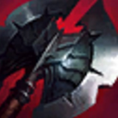
    
    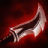
    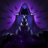
    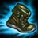
    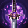
  </div>
  <p class="Build-Text">there are multiple builds you can go when playing zed. however, the build above is the build most would use. the items below are situational and can be built in replacement for any of the items below.</p>
    <!--Build2-->
  <div class="build-2">
    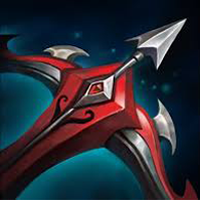
    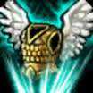
    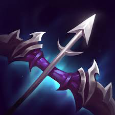
    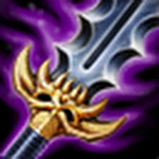
    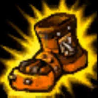
    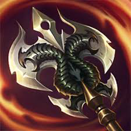
  </div>
</section>
  <!--masts-->
<section id="masteries">
  <div class="mast1">
    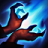
    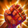
    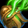
    
  </div>
  <div class="mast2">
    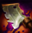
    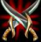
    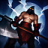
    
    
    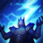
  </div>
  <p class="masteries-text">for masteries i usually go 12/18/0 with thunderlords being the keystone for max damage </p>
<pre class="mast-num">12     18</pre>
</section>
  <!--runes-->
<section id="runes">
<div class="runes1">
  <p class="rune1">9x armor seal</p>
  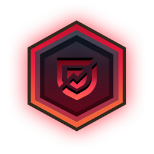<p class="rune2">9x lethality mark</p>
  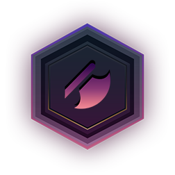<p class="rune3">3x ad quint</p>
  <p class="rune4">9x mr glyphs</p>
</div>
</section>
  <!--Lane-->
<section id="lane">
  <p>early game<br>
zed early game can be played two different ways depending on a few factors. first, you want to look at at the enemy jungler, if the jungler is a very aggressive jungle then you want to save your shadow instead of using it for poke in lane for an escape from the enemy jungle. if the enemy jungle is passive and wont gank much then poke as much as possible unless you are at a dissadvantage in lane. your passive gives an easy way to farm up so abuse that ability as much as possible as well as your q. watch your energy pool, since it goes by very fast, do not engage unless you have enough energy for a full combo.<br>
<br>mid game<br>
depending on how your early game goes, you can do one of two things. if you win your lane and you are decently fed, then you should be roaming as much as possible and farming up kills. however, if your laning phase goes bad then keep farming and just try not to die. in early teamfights try to just pick off the enermy adc and get out after you do your damage. play safe and get kills and build your essential items and prepare for the late game.<br>
<br>late game<br>
late game is when zed really owns the game. if you are fed you pretty much will always just target the enemy’s carry and kill them. in teamfights you are going to be targetted so get a kill, get out, and then go right back in to get more damage off. however, if you are not fed or just are a little behind, you want to splitpush. splitpushing will cause two people to come and defend, because zed can kill almost anybody one on one, which will give your team an advantage in fights. if they do not come defend their towers then you can keep pushing and pushing and maybe just win.</p>
</section>
<script src="https://ajax.googleapis.com/ajax/libs/jquery/2.1.4/jquery.min.js"></script>
<script src="https://github.com/kswedberg/jquery-smooth-scroll/blob/master/jquery.smooth-scroll.min.js"></script>
<script>
$('.smooth').on('click', function() {
   $.smoothScroll({
       scrollElement: $('html'),
       scrollTarget: '#' + this.id
   });

   return false;
});
</script>
